Warna
Menurut Rustan (2013:72) Mengemukakan bahwa: Warna dalam logo
digunakan untuk memperkuat kesan yang ingin ditimbulkan dari sebuah
bentuk atau huruf.
Contoh: perusahaan dengan segmen pasar anak-anak selain bentuk logo
yang kekanak-kanakan juga penggunaan warna yang sesuai misalnya ceria,
agar kesan yang ditimbulkan sesuai dengan targetnya.
Makna Warna
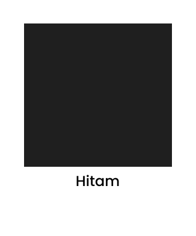
Warna hitam dapat mencirikan nuansa klasik, baru, ketakutan,
depresi, kemarahan, kematian (dalam tradisi barat), kecerdasan,
pemberontakan, misteri, ketiadaan, modern, kekuatan, hal–hal
duniawi, formal, elegan, kaya, gaya, kejahatan, serius, mengikuti,
kecenderungan sosial, anarki, kesatuan, dukacita, profesional.
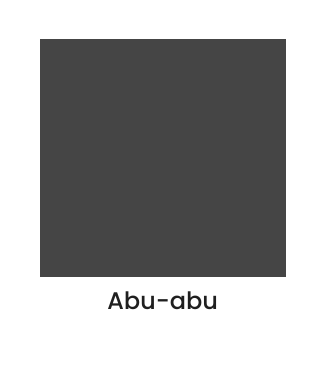
Abu–Abu dapat menggambarkan keamanan, elegan, rendah hati, rasa
hormat, stabil, kehalusan, bijaksana, masa lalu, bosan, kebusukan,
renta, polusi, urban, emosi yang kuat, seimbang, netral,
perkabungan, formal, bulan maret.
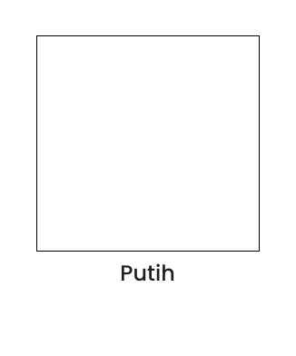
Putih rendah hati, suci, netral, tidak kretif, masa muda, bersih,
cahaya, penghormatan, kebenaran, salju, damai, innocence, simple,
aman, dingin, penyerahan, takut, tanpa imajinasi, udara kematian
(tradisi timur), kehidupan perkawinan edisi barat, harapan, lemah
lembut, kosong.
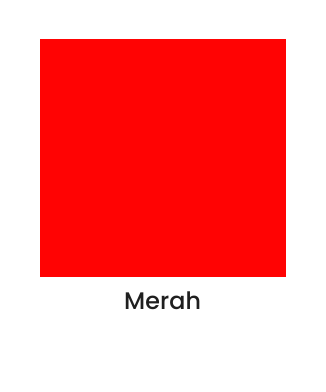
Merah perayaan, kekayaan, nasib baik (cina), suci, tulus,
perkawinan (india), perkabungan (afrika selatan), setan (tradisi
modern barat), gairah, kuat, energi, api, cinta, roman, gembira,
cepat, panas, sombong, ambisi. Pemimpin, maskulin, tenaga, bahaya,
menonjol, darah, perang, marah, revolusi, radikal, sosialisme,
komunisme, agresi, penghormatan, martir, roh kudus.
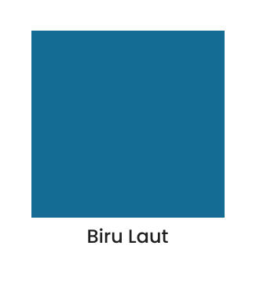
Biru laut, manusia, produktif, isi dalam, langit, damai, kesatuan,
harmoni, tenang, percaya, sejuk, kolot, air, es, setia, bersih,
teknologi, musim dingin, depresi, idealisme, udara, bijaksana,
kerajaan, bangsawan, bumi, zodiak virgo, pisces, aquarius, kuat,
tabah, cahaya, ramah, perkabungan (iran), kebenaran, cinta,
keagamaan, mencegah roh jahat, kebodohan dan kesialan.
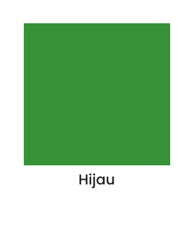
Hijau kecerdasan tinggi, musim semi, kesuburan, masa muda,
lingkungan hidup, kekayaan uang (amerika), nasib baik, giat, murah
hati, pergi, rumput, agresi, dingin, cemburu, malu (cina), sakit,
rakus, narkoba, korupsi (afrika utara), abadi, udara, tanah,
tulus, zodiak cancer, pemburuan, pertumbuhan, kesehatan, bulan
agustus, keseimbangan, harmoni, stabil, tenang, kreatif, islam.
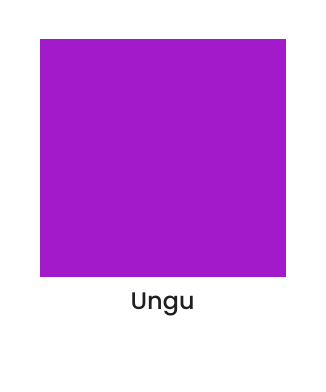
Ungu bangsawan, iri, sensual, spiritual, kretivitas, kaya,
kerajaan, upacara, misteri, bijaksana, pencerahan, sombong,
flamboyant, menonjol, perkabungan, berlebihan, tidak senonoh,
biseksual, kebingungan, harga diri, zodiak scorpia, bulan mei,
november, kaya, romantis, kehalusan, penebusan dosa.
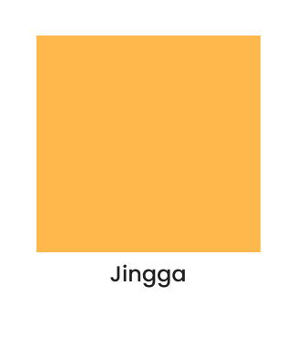
Jingga hinduisme, budhhaisme, kebahagian, energy. Keseimbangan,
panas, api, antusisme, flamboyan, kesenangan, agresi, sombong,
menonjol, emosi berlebih, peringatan, bahaya, musim gugur, hasrat,
zodiak sagitarius, bulan september, kerajaan (belanda),
protestanisme (irlandia).
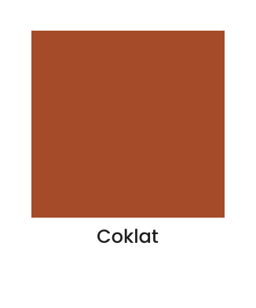
Coklat tenang, berani, kedalaman, mahluk hidup, alam, kesuburan,
desa, stabil, tradisi, ketidakpastian, fasisme, tidak sopan,
bosan, cemar, berat, miskin, kasar, tanah, bulan oktober, zodiak
capricon, scorpio, membumi, selera makan, menyehatkan, tabah,
simple, persahabatan, ketergantungan.
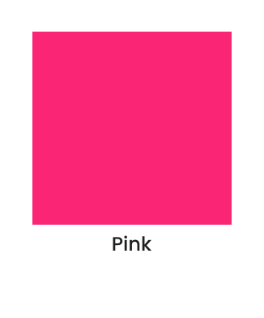
Pink musim semi, rasa syukur, terima kasih, penghargaan, kagum,
simpati, feminim, kesehatan, cinta, roman, bulan juni, perkawinan,
suka cita, innocence, kekanakan.
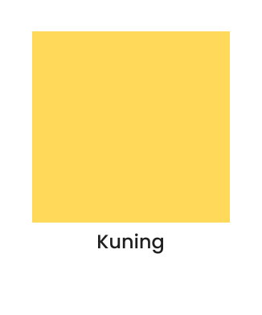
Kuning sinar matahari, gembira, bahagia, tanah, opitimis, cerdas,
idealism, kaya (emas), musim panas, harapan, udara, liberalisme,
pengecut, sakit (karantina), takut, bahaya, tidak jujur, serakah,
lemah, feminim, bergaul, persahabatan, zodiak Gemini, Taurus, leo,
april, bulan September, kematian (abad pertengahan), perkabungan
(mesir), berani (jepang), tuhan (kuning emas).
Memilih warna pada suatu logo tidaklah mudah dan butuh riset
mendalam. Memilih warna bukan berdasarkan selera atau asal tebak.
Karena belum tentu warna yang dipilih adalah warna yang sesuai
dengan kepribadian perusahaan tersebut.